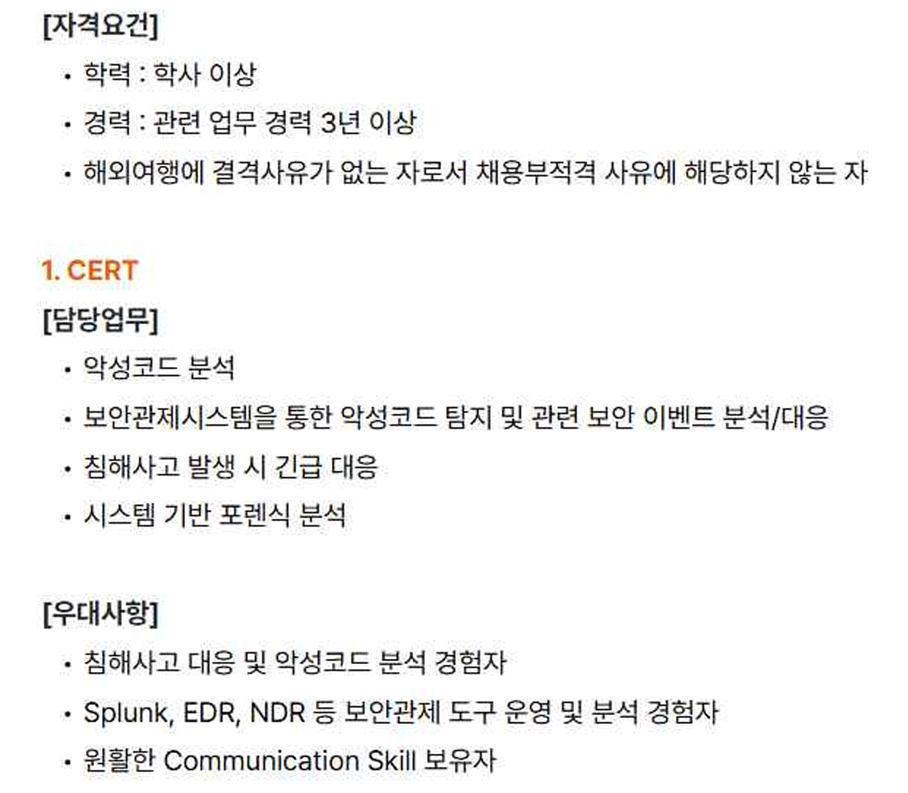
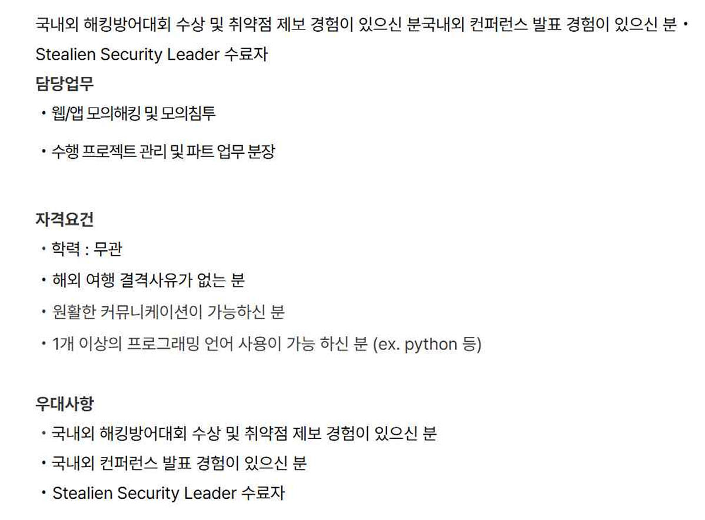
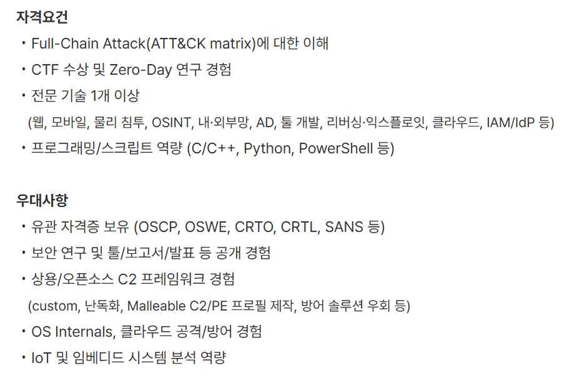
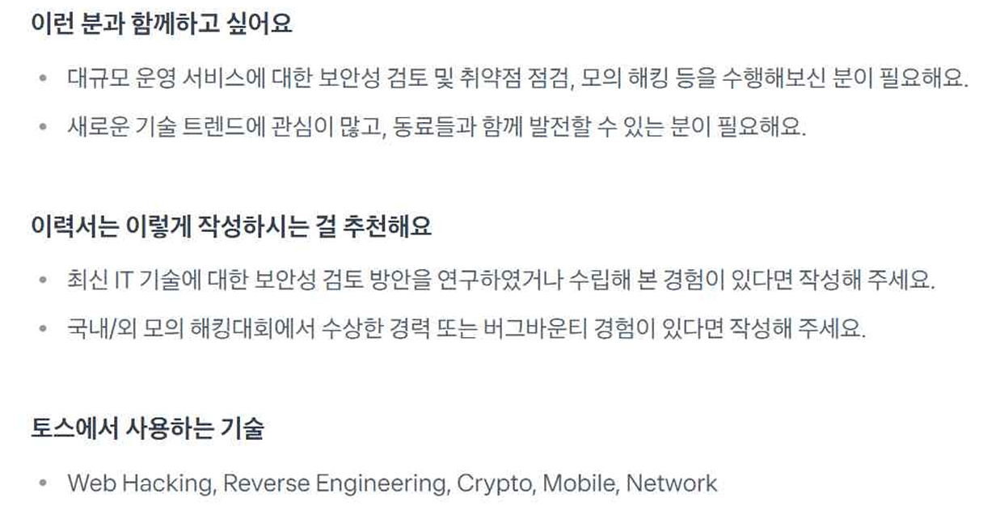
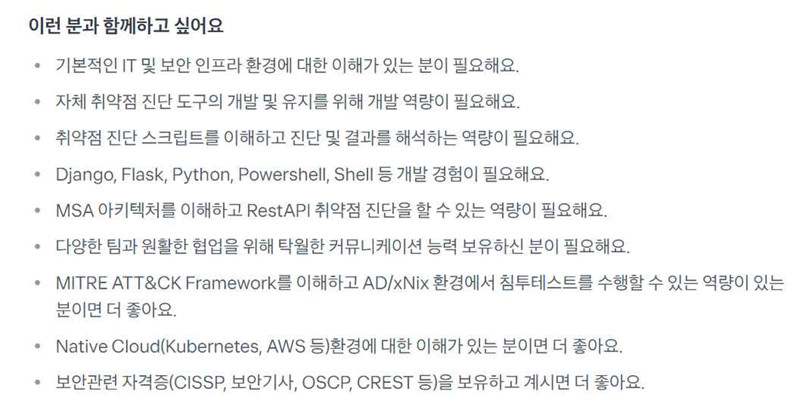

Career Path Mission Report
이 문서는 진로 가치관과 보안 분야 희망 직무에 대한 시장조사 내용을 정리한 글입니다.
1. Career Values and Priorities
진로에서 가장 중요한 가치와 우선순위가 제일 낮은 가치 두 가지씩을 정리해 보았습니다.
중요하다고 생각한 것 중 제일 중요하다고 생각한 것은 자율성이었습니다. 저는 일을 하거나 작업을 할 때 너무 딱딱한 분위기면 그 분위기에 맞추기 위해 노력하느라 작업 완성도가 떨어지는 경향이 있어서 어느 정도 자유로운 분위기면 좋다고 생각했습니다.
두 번째로 중요하게 생각하는 가치는 연봉입니다. 저는 인생에서 가장 중요하다고 생각하는 것 중 하나가 금전적 자유일 만큼 돈은 없어서는 안 될 존재라고 생각합니다. 따라서 연봉을 중요시 생각합니다.
중요하지 않다고 생각하는 가치는 첫 번째로 근무 지역입니다. 왜냐하면 근무지는 내가 맞추면 된다고 옛날부터 생각하였기 때문입니다.
두 번째로는 회사 인지도입니다. 제가 찾은 회사들은 인지도가 높은 편이지만 저는 연봉만 제가 생각한 만큼 주면 다 좋기 때문에 회사 인지도는 많이 생각하지 않은 편입니다.
2. Market Analysis
희망 회사는 보안 관련 회사를 집중적으로 찾아보았습니다. 직무는 앱 보안을 전문으로 전담하는 직무, 그리고 회사를 찾을 때는 보안에서 이름이 알려져 있는, 즉 유명한 회사를 찾았습니다. 따라서 모든 회사에서는 공통적으로 3년 이상의 경력을 요구하였습니다.
그리고 저는 앱 보안 관련으로 알아본 결과 방어, 공격 두 가지 구분 없이 찾아보았습니다.
겹치는 직무요건으로는 첫 번째로 취약점에 대해 알아야 했습니다. 취약점이란 시스템이나 프로그램, 네트워크 등에 있는 약점입니다. 회사에서는 취약점에 대한 점검, 공격, 진단 등의 경험을 소유한 사람을 우대했습니다.
두 번째로 공격 혹은 방어에 대해 알아야 했습니다. 공격 방어기술 혹은 지식을 요구하는 회사들이 있었고, 공격에서는 여러 공격 방법을 알거나 기술을 정리해 놓은 데이터베이스를 아는 사람, 또 취약점을 제보해 본 적 있는 사람을 우대했습니다. 방어에서는 방어에 대한 이해, 코드 분석, 보안 인프라 이해, 취약점 점검 등을 할 수 있으면 더 좋은 점수를 받을 수 있었습니다.
세 번째로 더 있으면 좋은 것은 커뮤니케이션입니다. 이 능력은 여러 회사가 요구할 정도로 중요한 능력 중 하나였습니다. 또 프로그래밍 언어도 중요한 것 중 하나였으며, 공통적으로 파이썬, 파워쉘 등이 있고 몇몇 곳에서는 C언어 등이 있었습니다. 또 여러 가지 자격증과 대회, 실전 경험 등을 요구하는 곳도 있었습니다.
3. Reflection and Goal
저는 컴퓨터공학을 공부하면서 자연스럽게 보안 분야에 관심을 가지게 되었습니다. 특히 시스템의 취약점을 찾고 이를 방어하는 과정에 흥미를 느꼈고, 이를 통해 보안 직무를 진로로 설정하게 되었습니다.
이번 시장 분석을 통해 보안 직무에서는 취약점 분석, 공격 및 방어에 대한 이해, 그리고 프로그래밍 능력이 중요하다는 것을 알게 되었습니다.
현재 저의 수준은 아직 기초 단계이기 때문에, 앞으로 파이썬과 C언어를 중심으로 프로그래밍 실력을 강화하고, CTF 문제 풀이를 통해 실전 경험을 쌓는 것이 필요하다고 생각했습니다.
이를 통해 장기적으로는 보안 전문가로 성장하는 것을 목표로 하고 있습니다.
4. Companies and References
자격 요건 및 우대사항을 살펴본 회사는 SK Shieldus, Stealien, Toss Security Researcher 직무 등이었습니다.
SK Shieldus
https://www.skshieldusapply.com/ko/apply?jobs=CERT&divisions=%EC%A0%95%EB%B3%B4%EB%B3%B4%EC%95%88
Stealien
Toss Security Researcher
https://toss.im/career/job-detail?job_id=4076085003
Captured Job Requirement Screenshots





Created
2026-04-10 20:20 (Asia/Seoul)